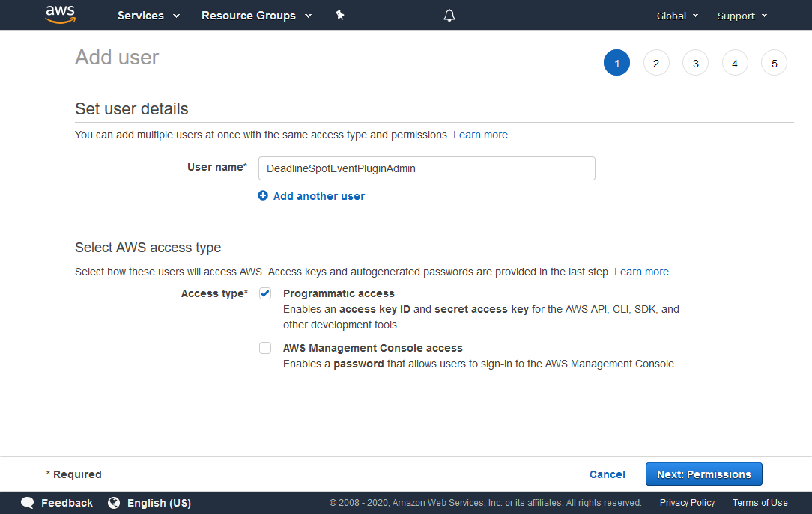
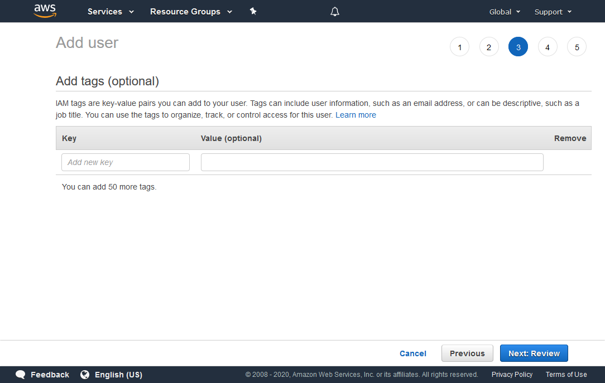
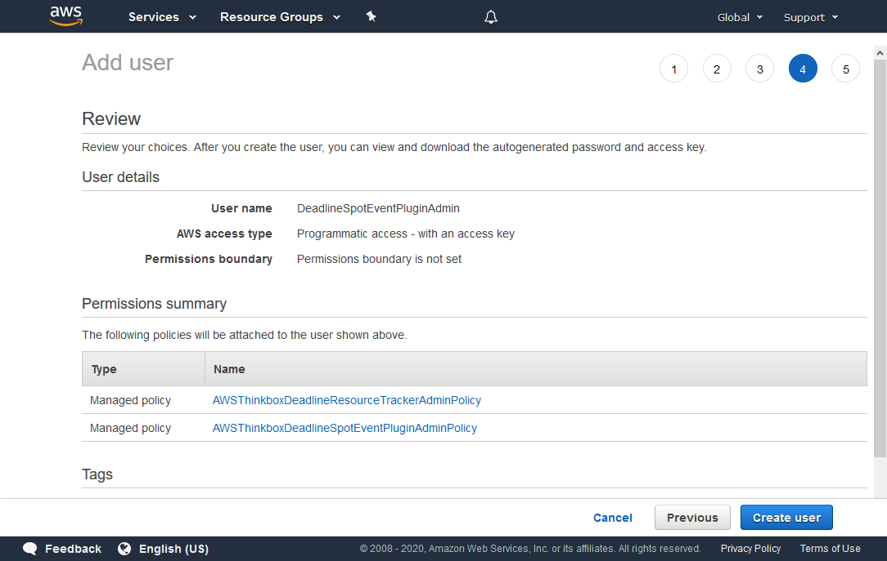
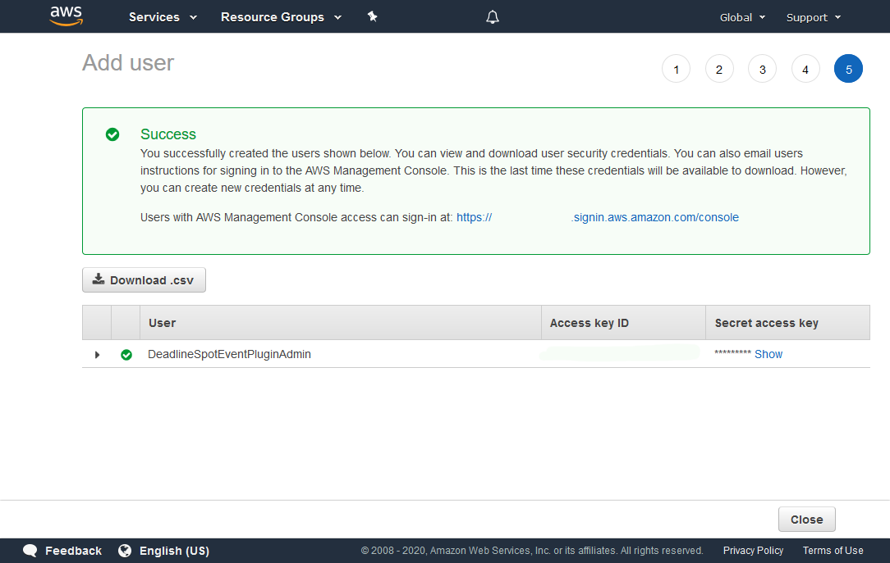
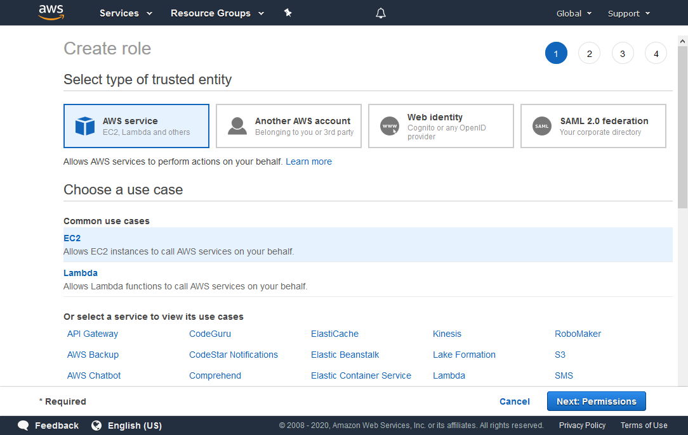
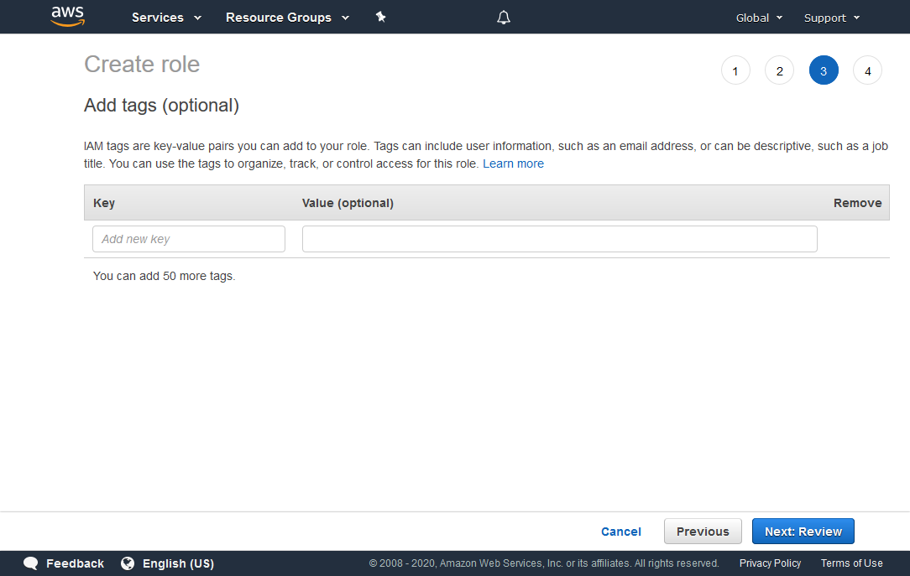
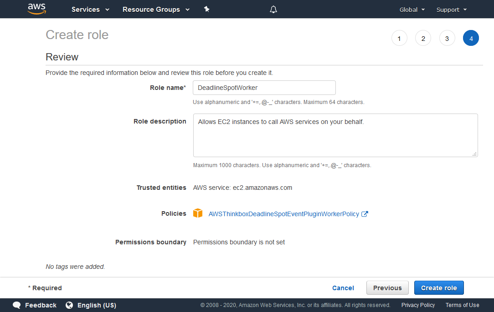
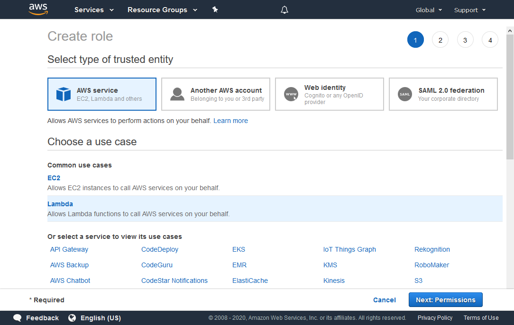
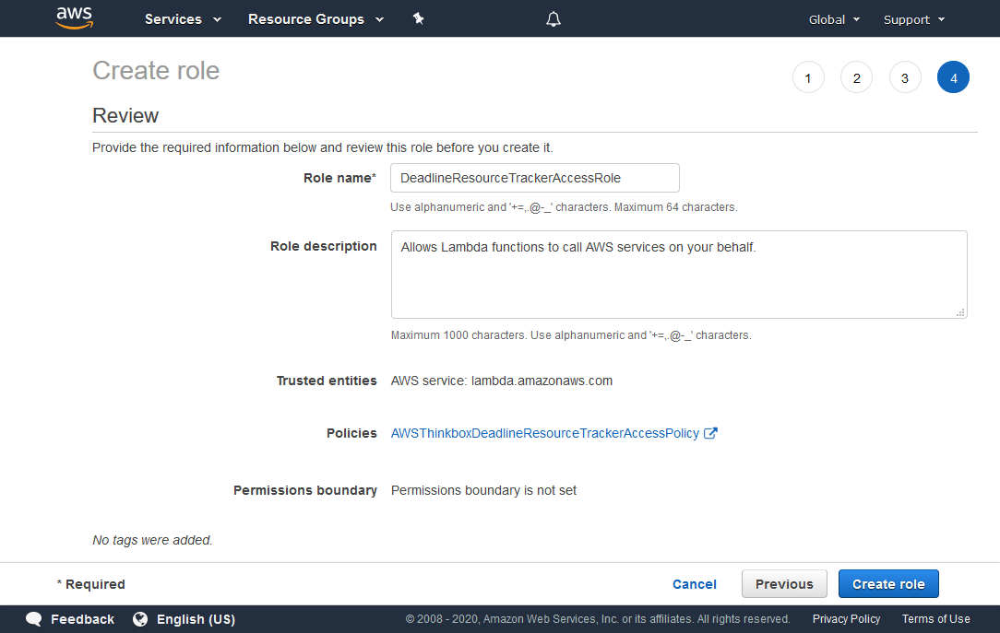

Spot Event Plugin - AWS Permissions¶
Overview¶
When working with AWS you can manage access by creating policies and attaching them to IAM identities or AWS resources.
Within the Spot Event Plugin we require the following roles:
See also
You can learn more about IAM Permissions on the AWS IAM Website.
Spot Credentials¶
This IAM User or IAM Role is used by the RCS or Pulse when they execute the Spot Event Plugin. These Spot credentials are used by the Spot Event Plugin and contain the permissions necessary to create, maintain and modify the Spot Fleets and optionally those necessary to deploy the Resource Tracker.
You can grant the required permissions by attaching the following AWS managed IAM policies to your IAM user:
These credentials will be used when configuring Deadline.
Creating the Spot Credentials IAM User¶
To create the Spot Credentials IAM user:
Sign in to the AWS Console.
Click on Services at the top of the AWS Console, and then click on IAM under “Security, Identity and Compliance”.
On the “IAM” panel that appears, select Users, and then click the Add user button.
In the “Add user” panel that appears:
For the User name, enter DeadlineSpotEventPluginAdmin (or any name of your choosing).
For Access type, choose Programmatic access.
Click the Next: Permissions button to continue.

Search for the AWSThinkboxDeadlineSpotEventPluginAdminPolicy and AWSThinkboxDeadlineResourceTrackerAdminPolicy policies in the search box, and check both of them in the list below.
Click the Next: Tags button to continue.
You can add tags with additional data to the user, but they are not required.
Click the Next: Review button to continue.
Verify that the information is correct, and click Create user.
Once the user is created you’ll see a confirmation screen. Here you can get your Access key and Secret access key, which you’ll need to enter in the “Security Credentials” field of the Configure Event Plugin dialog.
Warning
Once you navigate away from the confirmation screen, you will be unable to access the Secret Key.
Warning
This secret access key can be used to access your AWS account. It is important that you keep it stored securely. Please refer AWS Guidelines for standard best practices for management of AWS access keys.
Note
For further security, consider modifying these IAM policies with an IP address condition on each policy statement. The IP addresses for this connection should be for any machines that will run the Spot Event Plugin, either the RCS or Pulse instances. Place this text after the “Resource” entry in each of the statements in the policies.
"Condition": {
"IpAddress" : {
"aws:SourceIp" : ["<public_ip_address>"]
}
}
This way, only API calls from the specified IP address will be accepted by AWS.
Spot Fleet IAM Instance Profile¶
This IAM role is used by the Workers that are started by the Spot Fleet Requests. This role is used to give the Workers permissions to terminate themselves, determine what Group they are part of, and report their status to the Resource Tracker (if in use).
You can assign the required permissions by attaching the following AWS-managed IAM policy to an IAM role. We require that the name of this role begins with “DeadlineSpot”:
Warning
As of Deadline 10.1.8, our default Spot Credentials IAM policy only allows IAM instance profiles with IAM role names that begin with DeadlineSpot.
Creating the IAM Instance Profile¶
To create the IAM role for your IAM instance profile:
Sign in to the AWS Console
Click on Services at the top of the AWS Console, and then click on IAM under “Security, Identity and Compliance”.
On the “IAM” panel that appears, click Roles, and then click the Create role button.
In the “Create role” panel that appears, choose the following:
Under Select type of trusted entity, choose AWS service.
Under Choose a use case, choose EC2.
Click the Next: Permissions button to continue.

Search for AWSThinkboxDeadlineSpotEventPluginWorkerPolicy in the search box, and check it in the list below.
Click the Next: Tags button to continue.
You can add tags with additional data to the role, but they are not required.
Click the Next: Review button to continue.
In the Role name field, enter DeadlineSpotWorker. You can choose a different name for this role, however, the name must begin with “DeadlineSpot” in order to work with our default Spot Credentials IAM policies.
Verify that the information is correct, and click Create role.
Choose this role as the “IAM instance profile” in your Spot Fleet Request.
IAM Fleet Role¶
This IAM role is used directly by the Spot Fleet. It gives the Spot Fleet the permissions needed to start, stop, and tag instances.
By default, a role will automatically be created for your account called aws-ec2-spot-fleet-tagging-role which contains all of the permissions that are needed.
Resource Tracker Role¶
This IAM role is used by Deadline Resource Tracker so that it is able to access the AWS resources that it creates in your account.
This IAM role must have the following settings:
Trusted Entity: AWS Service: Lambda
Permissions policies: AWSThinkboxDeadlineResourceTrackerAccessPolicy (AWS managed IAM policy)
Role name: DeadlineResourceTrackerAccessRole
Creating the Resource Tracker IAM Role¶
To create the Resource Tracker IAM role:
Sign in to the AWS Console.
Click on Services at the top of the AWS Console, and then click on IAM under “Security, Identity and Compliance”.
On the “IAM” panel that appears, click Roles, and then click the Create Role button.
In the “Create role” panel that appears, choose the following:
Under Select type of trusted entity, choose AWS service.
Under Choose a use case, choose Lambda.
Click the Next: Permissions button to continue.

Search for AWSThinkboxDeadlineResourceTrackerAccessPolicy in the search box, and check it in the list below.
Click the Next: Tags button to continue.

You can add tags with additional data to the role, but they are not required.
Click the Next: Review button to continue.
In the Role name field, enter DeadlineResourceTrackerAccessRole.
Verify that the information is correct, and click the Create role button.

{kind=link}
{kind=link}
{kind=link}
{kind=link}
{kind=link}
{kind=link}
{kind=link}
{kind=link}
{kind=link}